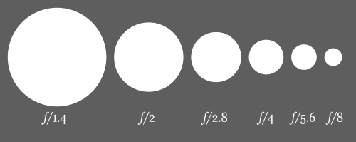

Focal Ratio or f-Number is a dimensionless number that is a quantitative measure of the ‘speed’ of a telescope’s optics, found by dividing the focal length by the aperture. The smaller the f/number, the lower the magnification, the wider the field, and the brighter the image with any given eyepiece or camera.
Fast f/4 to f/5 focal ratios are generally best for lower power wide field observing and deep space photography. Slow f/11 to f/15 focal ratios are usually better suited to higher power lunar, planetary, and binary star observing and high power photography. Medium f/6 to f/10 focal ratios work well with either.
An f/5 system can photograph a nebula or other faint extended deep space object in one-fourth the time of an f/10 system, but the image will be only one-half as large. Point sources, such as stars, are recorded based on the aperture, however, rather than the focal ratio – so that the larger the aperture, the fainter the star you can see or photograph, no matter what the focal ratio.
Figure 022 shows a diagram of decreasing apertures, that is, increasing f-numbers, in one-stop increments; each aperture has half the light gathering area of the previous one.
